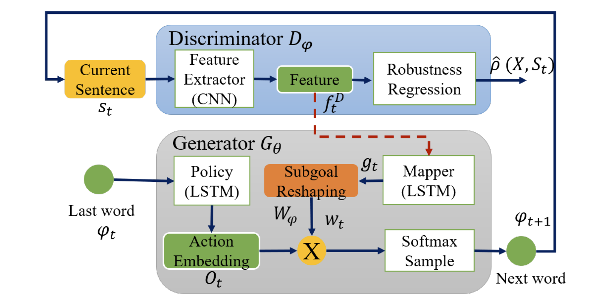
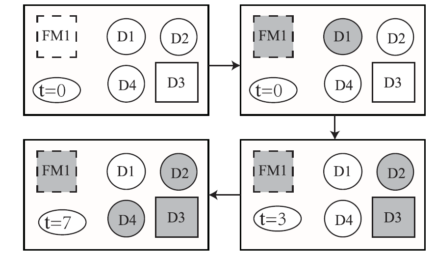
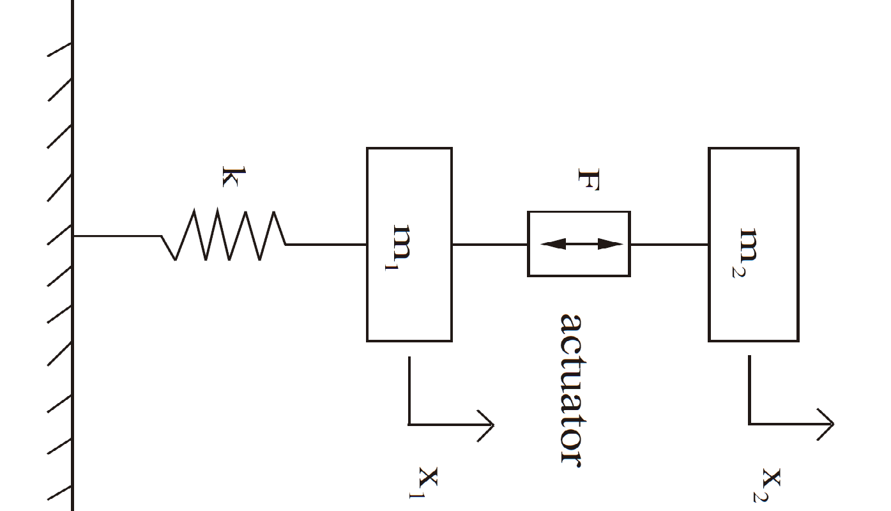

|
Formal language generation for fault diagnosis with spectral logic via adversarial training
Gang Chen*, Peng Wei, Huiming Jiang, Mei Liu
IEEE Transactions on Industrial Informatics, 2020
PDF
Abstract
BibTeX
Fault diagnosis with formal languages can be performed in an interpretable way. However, the traditional formal languages cannot deal with noisy environments. Additionally, finding the optimal formal language for fault diagnosis is still a challenge due to the sparse reward issue. This article presents a novel method to find formal languages, written with signal spectral logic (SSL), to describe the fault behaviors among frequency domain for fault diagnosis. The formal language defined by SSL is robust to noise, acts as the fault diagnoser, and provides interpretabilities for human operators. Moreover, the fault diagnoser construction procedure has been formulated as a language generation process and an adversarial training technique is used to find the optimal formal language and avoid sparse reward issue existing in language generation problems. Some experiments with real rolling element bearing data and simulated signals demonstrate that our method is able to find formal languages to diagnose faults efficiently and accurately under noisy environments.
@article{chen2020formal,
title={Formal language generation for fault diagnosis with spectral logic via adversarial training},
author={Chen, Gang and Wei, Peng and Jiang, Huiming and Liu, Mei},
journal={IEEE Transactions on Industrial Informatics},
volume={18},
number={1},
pages={119--129},
year={2020},
publisher={IEEE}
}
|

|
Frequency-temporal-logic-based bearing fault diagnosis and fault interpretation using Bayesian optimization with Bayesian neural networks
Gang Chen*, Mei Liu, Jin Chen
Mechanical Systems and Signal Processing, 2020
PDF
Abstract
BibTeX
Rolling element bearings are widely used components in modern rotary machines, and accurate diagnosis and interpretation for faults of bearings are significant for equipment maintenance. This paper introduces a fault diagnosis method with a formal specification language, which overcomes the difficulty of understanding the decision process of fault diagnosis. The formal specification is written with a novel formal language, called frequency-temporal-logic, defining the time-frequency properties of time series signals, which not only is a classifier to diagnose the faults but also gives interpretations for the fault signals with its semantics. To find an optimal description for the fault signals, the Bayesian optimization with Bayesian neural networks has been utilized to infer the structure and parameters of the formal specification. The semantics of frequency-temporal-logic then gives the fault interpretation. Moreover, the quantitative semantics for the formal language is defined based on a novel satisfaction metric, which has a noise resistance property. Analysis of the proposed method shows that the formal description can deal with noisy signals and variable speed operations of the bearings. Finally, comparison experimental results indicate the proposed method can obtain high fault diagnosis accuracy.
@article{chen2020frequency,
title={Frequency-temporal-logic-based bearing fault diagnosis and fault interpretation using Bayesian optimization with Bayesian neural networks},
author={Chen, Gang and Liu, Mei and Chen, Jin},
journal={Mechanical Systems and Signal Processing},
volume={145},
pages={106951},
year={2020},
publisher={Elsevier}
}
|

|
Data-driven real-valued timed-failure-propagation-graph refinement for complex system fault diagnosis
Gang Chen, Xinfan Lin, Zhaodan Kong*
IEEE Control Systems Letters, 2020
PDF
Abstract
BibTeX
Timed Failure Propagation Graphs (TFPGs) have been widely used for the failure modeling and diagnosis of safety-critical systems. Currently most TFPGs are manually constructed by system experts, a process that can be time-consuming, error-prone, and even impossible for systems with highly nonlinear and machine-learning-based components. This letter proposes a new type of TFPGs, called Real-Valued Timed Failure Propagation Graphs (rTFPGs), designed for continuous-state systems. More importantly, it presents a systematic way of constructing rTFPGs by combining the powers of human experts and data-driven methods: first, an expert constructs a partial rTFPG based on his/her expertise; then a data-driven algorithm refines the rTFPG by adding nodes and edges based on a given set of labeled signals. The proposed approach has been successfully implemented and evaluated on three case studies.
@article{chen2020data,
title={Data-driven real-valued timed-failure-propagation-graph refinement for complex system fault diagnosis},
author={Chen, Gang and Lin, Xinfan and Kong, Zhaodan},
journal={IEEE Control Systems Letters},
volume={5},
number={3},
pages={1049--1054},
year={2020},
publisher={IEEE}
}
|

|
Temporal-logic-based semantic fault diagnosis with time-series data from industrial internet of things
Gang Chen, Mei Liu, Zhaodan Kong*
IEEE Transactions on Industrial Electronics, 2020
PDF
Abstract
BibTeX
The maturity of sensor network technologies has facilitated the emergence of an industrial Internet of Things (IIoT), which has collected an increasing volume of data. Converting these data into actionable intelligence for fault diagnosis is key to reducing unscheduled downtime and performance degradation, among other examples. This article formalizes a problem called semantic fault diagnosis- to construct the formal specifications of faults directly from data collected from IIoT-enabled systems. The specifications are written as signal temporal logic formulas, which can be easily interpreted by humans. To tackle the issue of the combinatorial explosion that arises, we propose an algorithm that combines ideas from agenda-based searching and imitation learning to train a policy that searches formulas in a strategic order. Specifically, we formulate the problem as a Markov decision process, which is further solved with a reinforcement learning algorithm. Our algorithm is applied to time-series data collected from an IIoT-enabled iron-making factory. The results show empirically that our proposed algorithm is both scalable to the size of the data set and interpretable, therefore allowing human users to take actions, for example, predictive maintenance.
@article{chen2020temporal,
title={Temporal-logic-based semantic fault diagnosis with time-series data from industrial internet of things},
author={Chen, Gang and Liu, Mei and Kong, Zhaodan},
journal={IEEE Transactions on Industrial Electronics},
volume={68},
number={5},
pages={4393--4403},
year={2020},
publisher={IEEE}
}
|

|
Necessary and sufficient conditions for lossless negative imaginary systems
Mei Liu, Xingjian Jing, Gang Chen
Journal of the Franklin Institute, 2020
PDF
Abstract
BibTeX
This paper studies some useful properties of lossless negative imaginary transfer matrices for both continuous-time and discrete-time systems. Necessary and sufficient conditions are established for lossless negative imaginary systems both in frequency domain and state-space realization. Meanwhile, a minor decomposition method for lossless negative imaginary systems is proposed in terms of a partial-fraction expansion. This method is important for developing non-proper lossless negative imaginary theory in this paper by allowing poles at the origin and infinity. Two new relationships between lossless positive real and lossless negative imaginary systems are consequently established. According to these new established relationships, a generalized continuous-time lossless negative imaginary lemma and a different version of discrete-time lossless negative imaginary lemma are developed in terms of a minimal state-space realization. Several examples are provided to illustrate the main results.
@article{liu2020necessary,
title={Necessary and sufficient conditions for lossless negative imaginary systems},
author={Liu, Mei and Jing, Xingjian and Chen, Gang},
journal={Journal of the Franklin Institute},
volume={357},
number={4},
pages={2330--2353},
year={2020},
publisher={Elsevier}
}
|